Python之旅：网络编程
网络编程
你现在已经学会了写python代码，假如你写了两个python文件a.py和b.py，分别去运行，你就会发现，这两个python的文件分别运行的很好。但是如果这两个程序之间想要传递一个数据，你要怎么做呢？
这个问题以你现在的知识就可以解决了，我们可以创建一个文件，把a.py想要传递的内容写到文件中，然后b.py从这个文件中读取内容就可以了
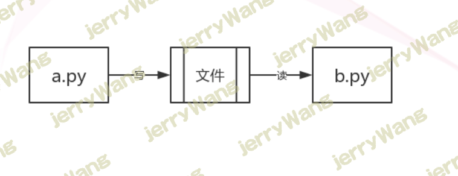
但是当你的a.py和b.py分别在不同电脑上的时候，你要怎么办呢？
类似的机制有计算机网盘，qq等等。我们可以在我们的电脑上和别人聊天，可以在自己的电脑上向网盘中上传、下载内容。这些都是两个程序在通信。
软件开发架构
我们了解的涉及到两个程序之间通讯的应用大致可以分为两种：
第一种是应用类：qq、微信、网盘、优酷这一类是属于需要安装的桌面应用
第二种是web类：比如百度、知乎、博客园等使用浏览器访问就可以直接使用的应用
这些应用的本质其实都是两个程序之间的通讯。而这两个分类又对应了两个软件开发的架构～
c/s架构
C/S即：Client与Server ，中文意思：客户端与服务器端架构，这种架构也是从用户层面（也可以是物理层面）来划分的。
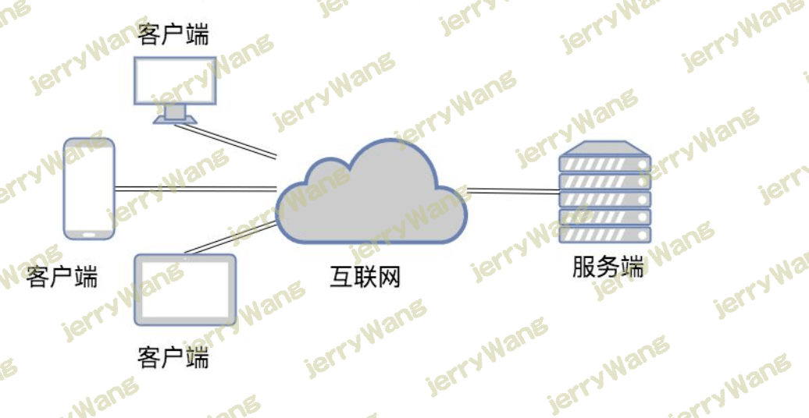
这里的客户端一般泛指客户端应用程序EXE，程序需要先安装后，才能运行在用户的电脑上，对用户的电脑操作系统环境依赖较大。
b/s架构
B/S即：Browser与Server,中文意思：浏览器端与服务器端架构，这种架构是从用户层面来划分的。
Browser浏览器，其实也是一种Client客户端，只是这个客户端不需要大家去安装什么应用程序，只需在浏览器上通过HTTP请求服务器端相关的资源（网页资源），客户端Browser浏览器就能进行增删改查。
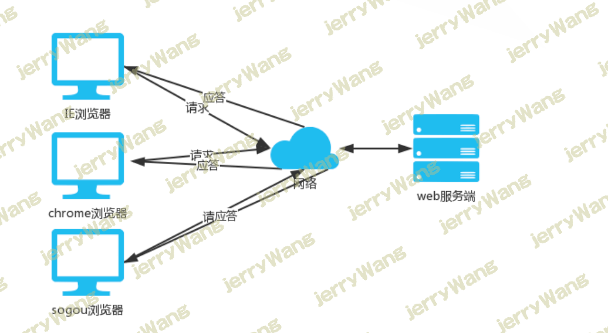
网路基础
导读
早期的电话需要有电话线、后面的大屁股电脑需要插网线、再后来的智能手机电脑需要有网卡。
也就是说网络通信的第一步必须得先有物理连接介质
有了物理连接介质就能实现通信了吗
不同语言国家的人彼此之间打电话沟通，彼此都无法理解对方说了些什么，需要双方都精通对方的语言或者用一种全世界通用的语言进行沟通交流才可以解决。
那回到我们的计算机，不同计算机之间要想实现无障碍的通信，除了物理连接介质以外，也应该有一套共用的标准，只有大家都按照这个标准来，计算机之间才能实现通信
这个标准我们叫它互联网协议！
互联网协议
互联网协议按照功能不同分为osi七层或tcp/ip五层或tcp/ip四层
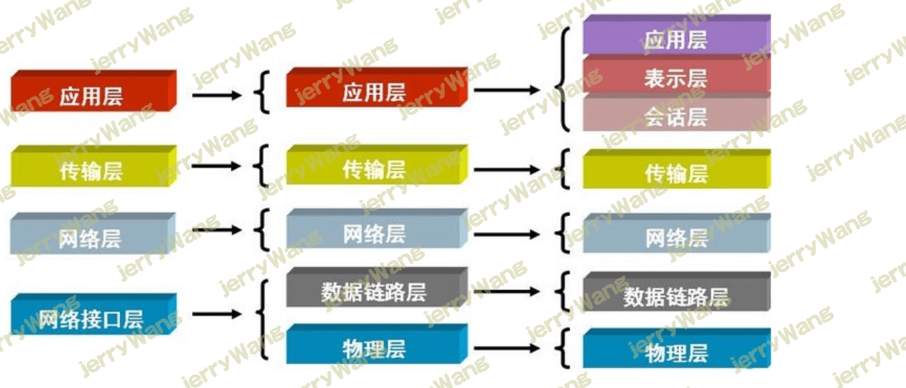
每层常见物理设备
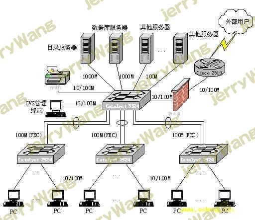
交换机知识点补充
现在如果就两台计算机，它们之间要想通信仅仅只需要彼此链接起来即可通信。
那如果是多台电脑之间想要实现彼此之间的相互通信，该如何链接呢？
一台电脑开多个网口插多个网线？那不成马蜂窝了嘛？
这个时候就需要一个中间人来帮我们完成多台机器之间的互联>>>:交换机(所有链接了同一个交换机的电脑彼此之间都是互联的)
了解:
三层交换机:既具有交换机功能又具有路由器功能
四层交换机:能够根据你走的是什么协议对应找到对应的应用
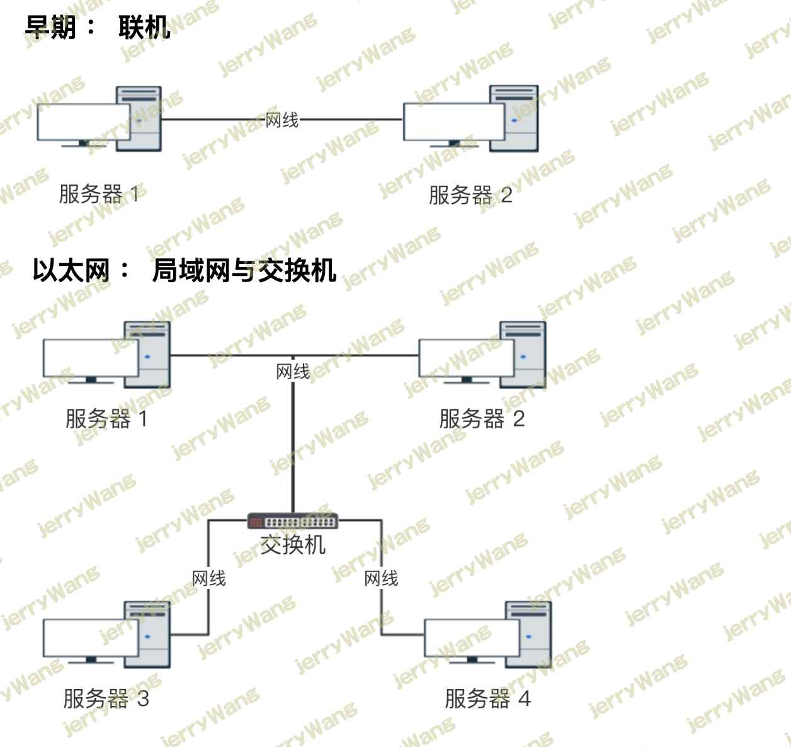
每层常见运行协议
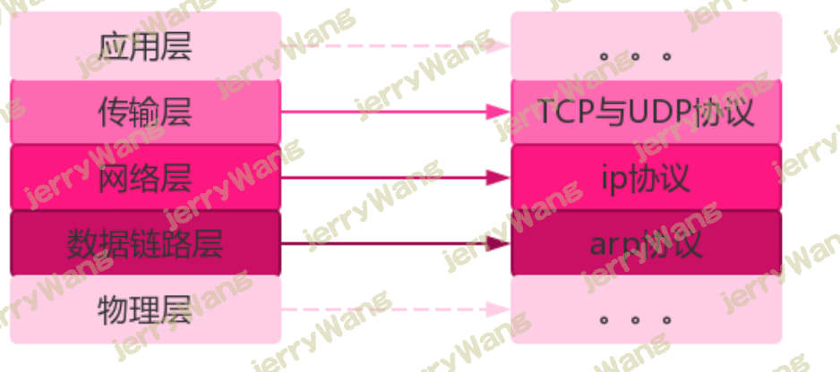
1.物理层
物理链接介质，传递电信号
2.数据链路层
物理层接收到一长串010101如何切分取值，这个事数据链路层的里面的以太网协议
- 1.它规定了0101的二进制电信号的分组方式
- 2.但凡接入互联网的机器，必须有一块网卡
- 网卡(用来唯一标识全世界独一无二的一台计算机)每块网卡出厂时都会被烧制上一个全世界唯一的编号，通常由12位16进制数表示（前六位是厂商编号，后六位是流水线号)
- 这个唯一表示计算机独一无二的地址就叫mac地址
基于以太网协议的通信方式
上面如果仅仅是两台电脑之间通信是不是已经开业完成了，但是如果是多台呢？如何去精准找到对方？
这里需要知道，在同一个局域网内通信基本靠吼！广播，单播
弊端:广播风暴，无法跨局域网通信
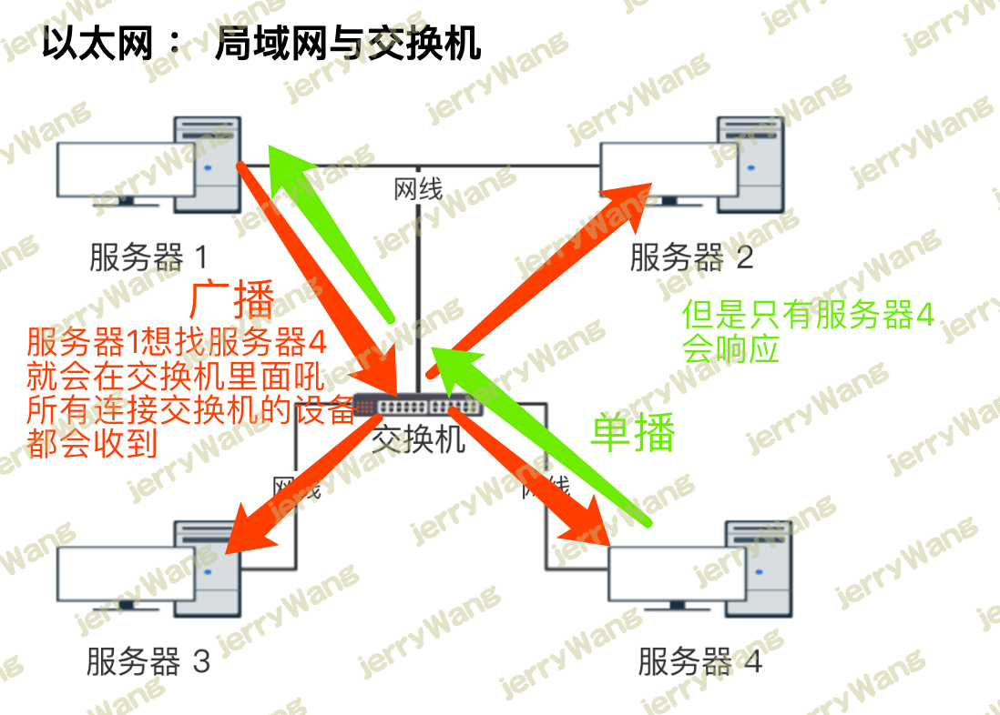
3.网络层
规定了计算机都必须有一个ip地址
ip地址特点:点分十进制
有两个版本ipv4和ipv6 为了能够兼容更多的计算机
其中ipv4版本
最小:0.0.0.0
最大:255.255.255.255
IP协议可以跨局域网传输并且ip地址能够唯一标识互联网中独一无二的一台机器！
4.传输层
TCP/UDP协议都是基于端口工作的协议这是重点，后面再讲，先来看，计算机之间通信，到底是谁和谁想通信，是计算机本身吗？是不是应该是我安装在计算机上的应用软件之间想通信(qq,微信等)，那我们现在只是知道了如何定位全世界独一无二的计算机，没办法确定计算机之上的哪款软件需要通信吧?这就需要用到端口
端口(port):0～65535用来标识一台计算机之上基于网络通信的应用软件，0～1024操作系统自己用的，一般情况下8000之后的端口我们可以任意使用，8000之前的通常会有相应的程序默认使用
ip：能够查到全世界独一无二的计算机
port:能够标识一台机器上的某个程序
ip+port:能够确定全世界范围内一台计算机上的某个程序
TCP协议
当应用程序想通过TCP协议实现远程通信时，彼此之间必须先先建立双向通信通道，基于该双向通道实现数据的远程交互，该双向通道直到任意一方主动断开才会失效
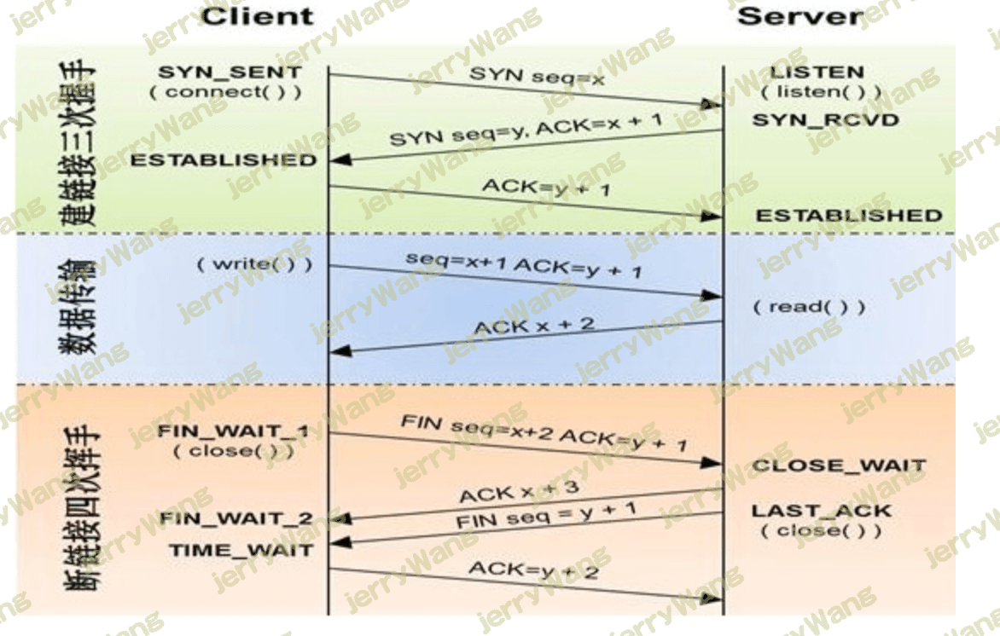
三次握手
建立双向通道的过程称之为三次握手,建立通道的发起者可以是客户端也可以是服务端，下面我们就以客户端先主动发起为例
客户端会朝服务端发送一个请求询问服务端:”我能不能挖一条通往你家的地道”
服务端收到请求，回复说:”好吧 你挖吧”，由于TCP是双向通道，客户端挖向服务端的通道只能给客户端朝服务端发消息使用，服务端要向给客户端发消息是没办法走这一条通道的，需要自己挖一条通往客户端的通道
所以服务端在回复同意客户端挖通道的同时还会问一句:”那我能不能也挖一条通往你家的通道”
客户端收到服务端请求后客户端到服务端的通道就挖成功了，然后也会同意服务端的请求，服务端挖向客户端的通道也会成功
总结:之所以称之为三次握手就是因为中间的服务端的同意，和请求合并成了一次请求
四次挥手
建立一个连接需要三次握手，而终止一个连接要经过四次握手
当服务端或者客户端不想再与对方进行通信之后，双方任意一方都可以主动发起断开链接的请求，我们还是以客户端主动发起为例
客户端由于已经没有任何需要发送给服务端的消息了，所以发起断开客户端到服务端的通道请求
服务端收到该请求后同意了 至此客户端到服务端的单项通道断开
服务端这个时候不会立刻朝客户端发器请求说那我也断开到你家的通道吧，服务端需要想想我手上还有没有需要发送给客户端的消息，如果还有的话，那我不能立马断开，先把数据发完才能断
等服务端检查完毕之后发送也没有数据要给客户端了，这个时候就会朝客户端发起断开服务端到客户端的通道请求
客户端同意该请求，至此四次挥手完成
总结:挥手必须是四次，中间的两次不能合并成一次，原因就在于需要检查是否还有数据需要给对方发送
UDP协议
当应用程序希望通过UDP与一个应用程序通信时，传输数据之前源端和终端不建立连接。
当它想传送时就简单地去抓取来自应用程序的数据，并尽可能快地把它扔到网络上。
TCP和UDP类似于
TCP：打电话(你一句我一句，你侬我侬)
UDP: 发短信(管你看不看，发了就不关我事了)

总结
TCP—-传输控制协议,提供的是面向连接、可靠的字节流服务。当客户和服务器彼此交换数据前，必须先在双方之间建立一个TCP连接，之后才能传输数据。TCP提供超时重发，丢弃重复数据，检验数据，流量控制等功能，保证数据能从一端传到另一端。
UDP—-用户数据报协议，是一个简单的面向数据报的运输层协议。UDP不提供可靠性，它只是把应用程序传给IP层的数据报发送出去，但是并不能保证它们能到达目的地。由于UDP在传输数据报前不用在客户和服务器之间建立一个连接，且没有超时重发等机制，故而传输速度很快
5.应用层
应用层协议: http协议,ftp协议
应用层由来：用户使用的都是应用程序，均工作于应用层，互联网是开发的，大家都可以开发自己的应用程序，数据多种多样，必须规定好数据的组织形式
应用层功能：规定应用程序的数据格式。
例：TCP协议可以为各种各样的程序传递数据，比如Email、WWW、FTP等等。那么，必须有不同协议规定电子邮件、网页、FTP数据的格式，这些应用程序协议就构成了”应用层”。
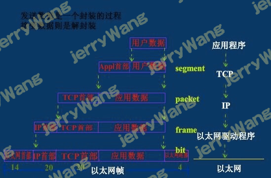
Socket通信
Socket概念
Socket是应用层与TCP/IP协议族通信的中间软件抽象层，它是一组接口。在设计模式中，Socket其实就是一个门面模式，它把复杂的TCP/IP协议族隐藏在Socket接口后面，对用户来说，一组简单的接口就是全部，让Socket去组织数据，以符合指定的协议。
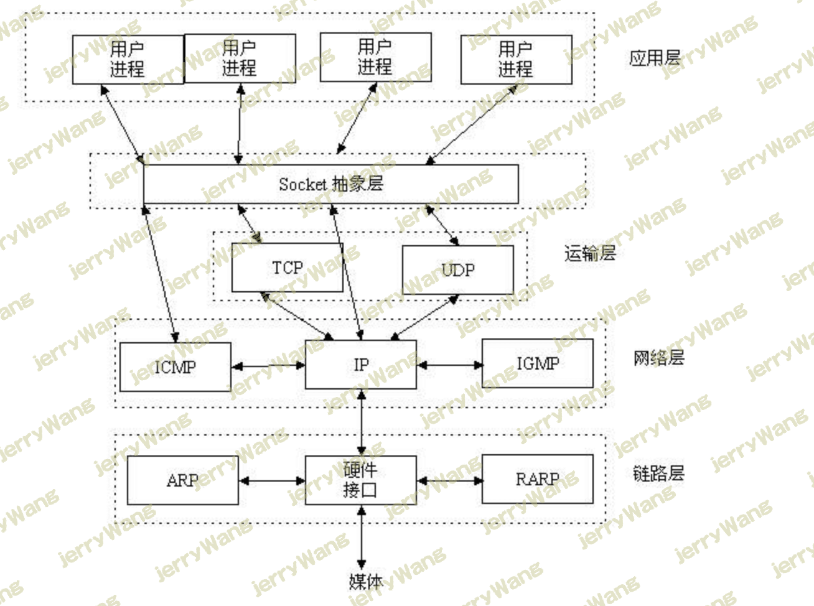
套接字发展史及分类
套接字起源于 20 世纪 70 年代加利福尼亚大学伯克利分校版本的 Unix,即人们所说的 BSD Unix。 因此,有时人们也把套接字称为“伯克利套接字”或“BSD 套接字”。一开始,套接字被设计用在同 一台主机上多个应用程序之间的通讯。这也被称进程间通讯,或 IPC。套接字有两种（或者称为有两个种族）,分别是基于文件型的和基于网络型的。
基于文件类型的套接字家族
套接字家族的名字：AF_UNIX
unix一切皆文件，基于文件的套接字调用的就是底层的文件系统来取数据，两个套接字进程运行在同一机器，可以通过访问同一个文件系统间接完成通信
基于网络类型的套接字家族
套接字家族的名字：AF_INET
(还有AF_INET6被用于ipv6，还有一些其他的地址家族，不过，他们要么是只用于某个平台，要么就是已经被废弃，或者是很少被使用，或者是根本没有实现，所有地址家族中，AF_INET是使用最广泛的一个，python支持很多种地址家族，但是由于我们只关心网络编程，所以大部分时候我么只使用AF_INET)
socket工作流程
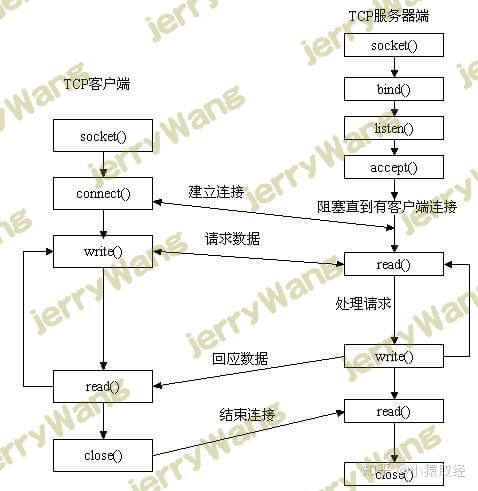
先从服务器端说起。服务器端先初始化Socket，然后与端口绑定(bind)，对端口进行监听(listen)，调用accept阻塞，等待客户端连接。在这时如果有个客户端初始化一个Socket，然后连接服务器(connect)，如果连接成功，这时客户端与服务器端的连接就建立了。客户端发送数据请求，服务器端接收请求并处理请求，然后把回应数据发送给客户端，客户端读取数据，最后关闭连接，一次交互结束
socket()模块函数用法
1 | import socket |
套接字函数
服务端套接字函数
s.bind() 绑定(主机,端口号)到套接字
s.listen() 开始TCP监听
s.accept() 被动接受TCP客户的连接,(阻塞式)等待连接的到来
客户端套接字函数
s.connect() 主动初始化TCP服务器连接
s.connect_ex() connect()函数的扩展版本,出错时返回出错码,而不是抛出异常
公共用途的套接字函数
s.recv() 接收TCP数据
s.send() 发送TCP数据(send在待发送数据量大于己端缓存区剩余空间时,数据丢失,不会发完)
s.sendall() 发送完整的TCP数据(本质就是循环调用send,sendall在待发送数据量大于己端缓存区剩余空间时,数据不丢失,循环调用send直到发完)
s.recvfrom() 接收UDP数据
s.sendto() 发送UDP数据
s.getpeername() 连接到当前套接字的远端的地址
s.getsockname() 当前套接字的地址
s.getsockopt() 返回指定套接字的参数
s.setsockopt() 设置指定套接字的参数
s.close() 关闭套接字
面向锁的套接字方法
s.setblocking() 设置套接字的阻塞与非阻塞模式
s.settimeout() 设置阻塞套接字操作的超时时间
s.gettimeout() 得到阻塞套接字操作的超时时间
面向文件的套接字的函数
s.fileno() 套接字的文件描述符
s.makefile() 创建一个与该套接字相关的文件
基于TCP协议的socket
模拟打电话
server端
1 | import socket |
client端
1 | import socket |
tcp是基于链接的，必须先启动服务端，然后再启动客户端去链接服务端
问题：有的同学在重启服务端时可能会遇到报错
更改下服务端与客户端端口，你即使执行了close 但是系统还没有close造成的
1 | Traceback (most recent call last): |
连续通话—-连续交换数据
1 | # server |
基于UDP协议的socket
server端
1 | import socket |
client端
1 | import socket |
udp是无链接的，启动服务之后可以直接接受消息，不需要提前建立链接
黏包现象
1 | res=subprocess.Popen(cmd.decode('utf-8'), |
同时执行多条命令之后，得到的结果很可能只有一部分，在执行其他命令的时候又接收到之前执行的另外一部分结果，这种显现就是黏包
基于tcp协议实现的黏包
Server端
1 | #_*_coding:utf-8_*_ |
Client端
1 | #_*_coding:utf-8_*_ |
黏包成因
TCP面向流的通信特点和Nagle算法
1 | TCP（transport control protocol，传输控制协议）是面向连接的，面向流的，提供高可靠性服务。 |
UDP不会发生黏包
1 | UDP（user datagram protocol，用户数据报协议）是无连接的，面向消息的，提供高效率服务。 |
会发生黏包的两种情况
情况一 发送方的缓存机制
发送端需要等缓冲区满才发送出去，造成粘包（发送数据时间间隔很短，数据了很小，会合到一起，产生粘包）
情况二 接收方的缓存机制
接收方不及时接收缓冲区的包，造成多个包接收（客户端发送了一段数据，服务端只收了一小部分，服务端下次再收的时候还是从缓冲区拿上次遗留的数据，产生粘包）
总结
黏包现象只发生在tcp协议中：
1.从表面上看，黏包问题主要是因为发送方和接收方的缓存机制、tcp协议面向流通信的特点。
2.实际上，主要还是因为接收方不知道消息之间的界限，不知道一次性提取多少字节的数据所造成的
黏包解决方案
解决方案一
问题的根源在于，接收端不知道发送端将要传送的字节流的长度，所以解决粘包的方法就是围绕，如何让发送端在发送数据前，把自己将要发送的字节流总大小让接收端知晓，然后接收端来一个死循环接收完所有数据。
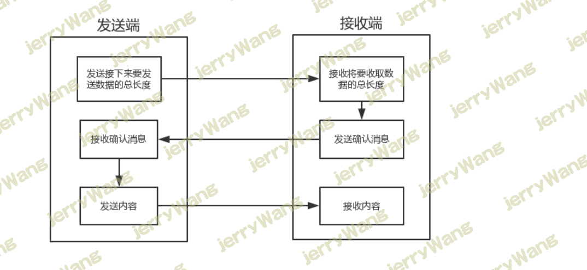
存在的问题：
程序的运行速度远快于网络传输速度，所以在发送一段字节前，先用send去发送该字节流长度，这种方式会放大网络延迟带来的性能损耗
解决方案进阶
刚刚的方法，问题在于我们我们在发送
我们可以借助一个模块，这个模块可以把要发送的数据长度转换成固定长度的字节。这样客户端每次接收消息之前只要先接受这个固定长度字节的内容看一看接下来要接收的信息大小，那么最终接受的数据只要达到这个值就停止，就能刚好不多不少的接收完整的数据了。
struct模块
该模块可以把一个类型，如数字，转成固定长度的bytes
1 | import struct |
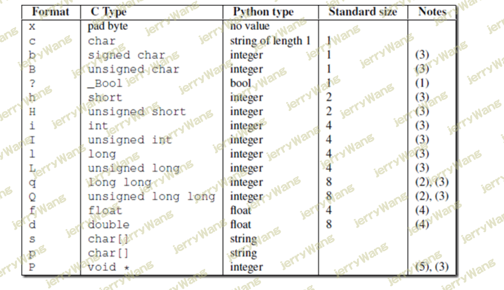
使用struct解决黏包
借助struct模块，我们知道长度数字可以被转换成一个标准大小的4字节数字。因此可以利用这个特点来预先发送数据长度。
| 发送时 | 接收时 |
|---|---|
| 先发送struct转换好的数据长度4字节 | 先接受4个字节使用struct转换成数字来获取要接收的数据长度 |
| 再发送数据 | 再按照长度接收数据 |
1 | # server端 |
我们还可以把报头做成字典，字典里包含将要发送的真实数据的详细信息，然后json序列化，然后用struck将序列化后的数据长度打包成4个字节（4个自己足够用了）
| 发送时 | 接收时 |
|---|---|
| 先发报头长度 | 先收报头长度，用struct取出来 |
| 再编码报头内容然后发送 | 根据取出的长度收取报头内容，然后解码，反序列化 |
| 最后发真实内容 | 从反序列化的结果中取出待取数据的详细信息，然后去取真实的数据内容 |
1 | # server端 |
总结:先发字典报头，再发字典数据，最后发真实数据
SocketServer模块介绍
1 | # TCP socketserver使用 |
 微信
微信 支付宝
支付宝